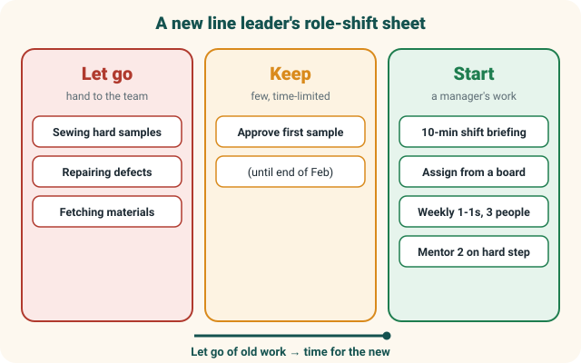

K7 · Self-directed learning and career development › Level 5 Leading
From specialist to manager
This lesson completes Sheet 1: Role-shift sheet of your manager's handbook. Print template. The N5 course builds on Mentor a colleague and Renew your career from the N4 course.
1. Objectives
- Write a role-shift sheet: 3 tasks to let go, 2 to keep, 4 new manager tasks.
- Ask for feedback from all sides with 3 questions: continue, start, stop.
2. Retrieval warm-up
- What are the four rungs of handover when mentoring?
- What is a "transferable" skill? Give an example of yours.
Answers
- Demonstrate, do together, observe, do alone.
- A skill you can use in a new role, such as deciding, persuading or mentoring.
Review: Mentor a colleague, Renew your career.
3. Explanation
When you become a manager, your measure of success changes. Before, you were judged on your own work. Now, you are judged on the results of the whole team.
Many new managers keep hold of specialist work. They do it because it is familiar and faster. The result: the team waits for them, and the management work is left undone.
A role-shift sheet has three columns.
- Let go: specialist work you hand to others. Choose work someone in the team can do, or can learn in a few weeks.
- Keep: one or two specialist tasks only you can do well right now. Add a target date for handing them over.
- Start: the manager's work. For example: setting team goals, delegating, one-to-ones, removing blockers, developing people.

Put the new work in your calendar. Management work is easily squeezed out by urgent tasks. Block fixed times each week. For example: one-to-ones on Tuesday afternoon, a progress check on Friday morning.
Ask for feedback from all sides. Ask your manager, your peers and your team. Use three short questions:
Three feedback questions
- ContinueWhat do I do that helps you?
- StartWhat don't I do yet that I should?
- StopWhat do I do that makes things harder for you?
Team members may hesitate to be honest with their manager. Let them answer anonymously on paper, or ask a third person to collect the answers. When you get feedback, thank people first. Then choose one thing to change and tell the team.
Three common traps: doing the team's work, avoiding difficult conversations, and favouring old friends. The role-shift sheet and all-round feedback help you spot these traps early.
4. Workplace example
Hypothetical scenario. Rosa is the best sewer on her line at a garment factory. She has just become line leader, managing 25 people.
In her first week, Rosa still sews the difficult samples and repairs the defects herself. The line waits for her, and output falls.
She writes a role-shift sheet. Let go: sewing difficult samples, repairing defects, fetching materials. Keep: approving the first sample on the line, until the end of February. Start: a 10-minute start-of-shift meeting, assigning work from a board, weekly one-to-ones with 3 people, mentoring 2 workers on the difficult operation.
After a month, she hands out 25 anonymous three-question forms. Many say "stop: standing behind us watching us sew". She thanks the whole line at the start-of-shift meeting. She says she will come to a workstation only when called, or for the hourly quality check.
Why this works: she chooses specific tasks to let go, keeps few, with a deadline. She asks for feedback in a safe way, then changes one thing and tells the team.
5. Practice
Hypothetical scenario. You are the best salesperson at an office equipment company. You have just become leader of a team of 6. You still look after 12 major clients of your own.
Write your role-shift sheet. Add how you will ask your team for feedback.
Hint 1
Of the 12 major clients, which ones could your team look after? Which need you for a while longer?
Hint 2
The new work needs a concrete schedule: which day, what time, how long.
Model answer
- Let go: 9 major clients, shared among 3 experienced people; writing quotes yourself; entering orders into the system.
- Keep: the 3 biggest clients, until the end of Q1, each with a team member alongside you.
- Start: a 30-minute team meeting on Monday morning; 30-minute one-to-ones with each person every two weeks; client visits with new staff; a sales figures review on Friday afternoon.
- Feedback: after 6 weeks, send the 3 questions through an anonymous form. Tell the team what you will change.
(The figures are hypothetical.)
6. Self-check
Choose an answer. Every option has an explanation.
Question 1. A new team leader still does the hardest part of every project. What is the most obvious effect?
-
Not quite. Watching teaches a little, but the team never does it alone. They stay dependent on the leader.
-
Correct. Correct. A leader's time is limited. Holding on to specialist work squeezes out the management work.
-
Not quite. It may finish on time now, but the team does not grow. When the leader is away, work stops.
Question 2. Which task belongs in the "Keep" column of the role-shift sheet?
-
Not quite. If you keep everything you do faster, the "Let go" column will be empty.
-
Correct. Correct. The Keep column should be short and time-limited, so the task moves to others.
-
Not quite. That is understandable, but the test is what the team needs, not what you enjoy.
Question 3. You want to know what your team thinks of how you manage. Which method is most likely to get honest answers?
-
Not quite. In front of everyone and their boss, few people dare to be honest.
-
Correct. Correct. Specific questions and a safe way to answer help people speak honestly.
-
Not quite. That is too long. You lose months in which you could have changed.
Question 4. Many forms say "stop: correcting my work in front of clients". What do you do first?
-
Not quite. Explaining at once sounds defensive. People will feel speaking up was pointless.
-
Correct. Correct. Thanks plus action show that feedback works, so people keep being honest.
-
Not quite. Hunting for the writer breaks the promise of anonymity. The team will never be honest again.
7. Reflection
- Which specialist task is hardest for you to let go? Why?
- If your team answered the three questions today, what might their "stop" be?
8. Real-world application
In the next 7 days, complete Sheet 1. Block two fixed time slots in your calendar for management work. Send the three feedback questions to at least 3 people.
9. Metadata
| skill | K7 · Self-directed learning and career development |
|---|---|
| level | Level 5 · Leading |
| group | N5 |
| framework_map | WEF: Leadership and social influence; Curiosity and lifelong learning; SkillsFuture CCS: Learning Agility; Developing People; NACE: Career and Self-Development; Leadership; CSfW: 1a Manage career and work life (reference only) |
| original | Vietnamese version |
| updated | 2026-11-14 |
Finish the lesson
Mark it as done and the site suggests reviews after 1, 3 and 7 days. The data stays on your device only.
Suggested reviews: